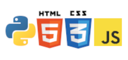

Um pouco sobre mim
Olá meu nome é Gustavo Agudo Gomes, atualmente estou cursando o ensino superior em Ciência da Computação,
mas comecei meus estudos na área da programção a cerca de um ano, com a linguagem Python, e dês de então
meu interesse apenas cresceu, foi quando decidi estudar mais a respeito do desenvolvimento Web, onde
comecei meus estudos nas tecnologias HTML5 e CSS3, e recentemente JavaScript.

Minhas Experiências
Como eu procuro meu primeiro emprego na area da tecnologia não tenho experiência profissional, porém com
o desenvolvimento de diversos projetos pessoais e trabalhos acadêmicos, consegui a habilidade de olhar
situações como desenvolvedor e pensar em possíveis soluções.
Meus Objetivos
Os meus objetivos dentro da area do desenvolvimento front-end são dominar os seguintes conteúdos:
- Domínio de HTML e HTML5
- Conhecimento avançado de CSS
- Frameworks CSS
- JavaScript
- Frameworks JavaScript
- Design Responsivo e Acessibilidade
Projetos
/*Estes projetos foram desenvolvidos por mim durante o meu curso do Curso em Video, clique para acessar*/